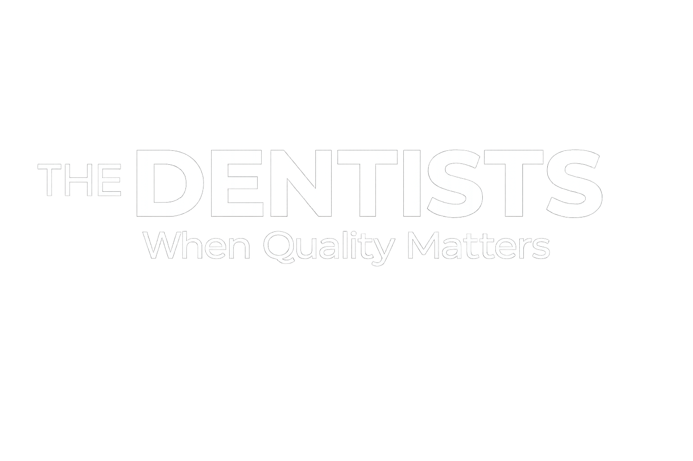

The Dentists Sotogrande
Rediseño completo del sitio web en WordPress y diseño de posts para Instagram, alineando identidad visual y experiencia de usuario.
Ver sitio ↗Soy Maite Sánchez Soriano, especialista en Marketing Digital, Social Media y Diseño Web. Planifico estrategias, diseño identidades y construyo webs que ayudan a marcas de sectores muy distintos a comunicar mejor.
Combino formación en Psicología con un Máster en Marketing Digital para entender no solo qué comunicar, sino por qué funciona.
Durante mi etapa en Agencia HAWKINS Techmarketing gestioné estrategias de redes, campañas de Google Ads, diseño gráfico y desarrollo web en WordPress para clientes de sectores sanitario, educativo, turístico, deportivo, institucional e industrial — a menudo varios proyectos a la vez, apoyándome en herramientas de IA generativa para optimizar procesos sin perder calidad.
Me interesa seguir creciendo en estrategia de marca y comunicación, uniendo análisis, diseño y redacción cuidada en cada proyecto.
Desarrollo estrategias digitales orientadas a mejorar la visibilidad de las marcas, combinando análisis, planificación y acciones enfocadas en alcanzar objetivos de negocio.
Planifico, creo y gestiono contenido para redes sociales, desarrollando estrategias adaptadas a cada marca y programando publicaciones con Metricool.
Diseño y optimizo sitios web en WordPress aplicando SEO On-Page, investigación de palabras clave y mejoras orientadas al rendimiento y la experiencia de usuario.
Creo piezas visuales para comunicación digital y corporativa, desarrollando diseños coherentes con la identidad de marca para distintos canales y formatos.
Diseño campañas de búsqueda, realizo estudios de palabras clave y optimizo anuncios para aumentar la visibilidad y atraer tráfico cualificado.
Integro herramientas de inteligencia artificial para crear textos, imágenes y contenido audiovisual, optimizando procesos sin renunciar a la creatividad y la calidad.








Rediseño completo del sitio web en WordPress y diseño de posts para Instagram, alineando identidad visual y experiencia de usuario.
Ver sitio ↗Adaptación de material gráfico para la presencia institucional de la APBA en un stand internacional en Rotterdam.
Diseño de cartel y roll-up, corrección de dossier y estrategia de redes sociales para la Asociación Fiesta del Running.
Reconstrucción completa del sitio web corporativo en WordPress, con nueva estructura y diseño visual.
Ver sitio ↗Mantenimiento y modificaciones del sitio en WordPress, junto con grabación y producción de contenido en vídeo.
Ver sitio ↗Producción de vídeo institucional con herramientas de IA generativa para la campaña oficial de la XVI edición.
Ver vídeo ↗Retoques y actualización del sitio en WordPress: renovación de fotografías, textos y contenido general.
Ver sitio ↗¿Tienes un proyecto en marcha o una idea que quieres poner en pie? Escríbeme y lo hablamos.